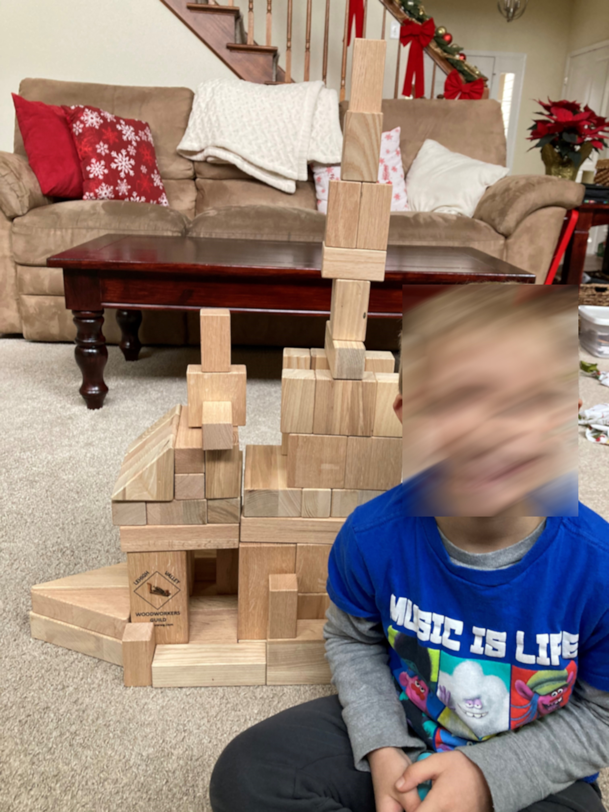
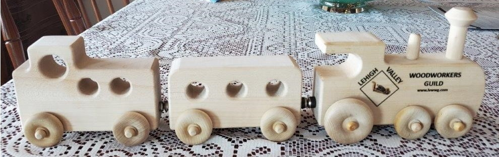
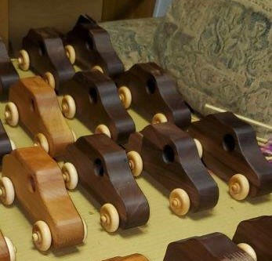
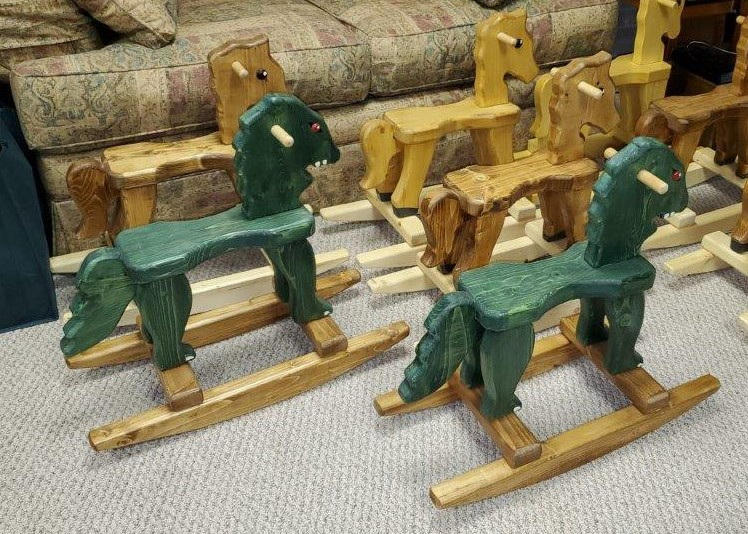
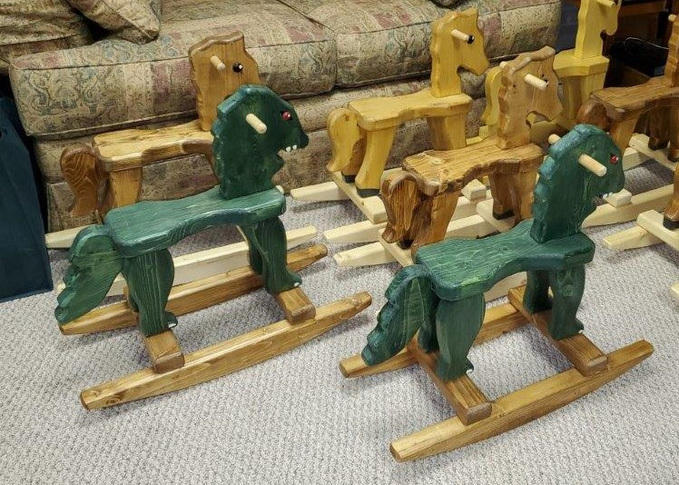
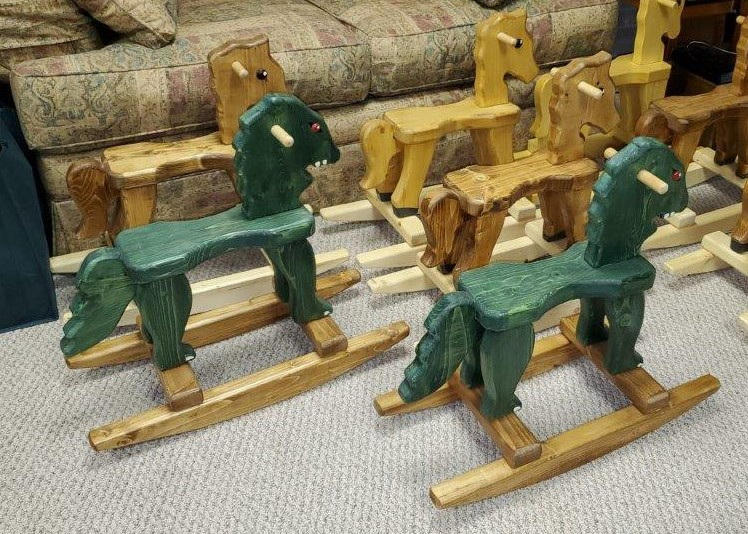

One of our primary goals is to give back to the children of community.
The reason we do this can best be said by this letter we received from one of those kid's parent.

To the Lehigh Valley Woodworkers Guild,
Thank you so much for the generous gift that we received while at Shriners Hospital in Philadelphia. My son(s) love them and I, as a parent, really like to see them play with things that really sparks their creativity. It was such an unexpected surprise to leave our appointment that day just before Christmas with this gift in hand.
Thank you all for your generous spirit and selfless giving. You are impacting the lives of these little ones in ways you can't even imagine.
God Bless,
Mike
Here are some of the projects we donate our time and effort to.


 

